Vinyl · 1982
Tatsuro Yamashita
For You
Виниловые пластинки, компакт-диски и цифровые издания.
For You

Ride on Time

Starboy

招待状のないショー
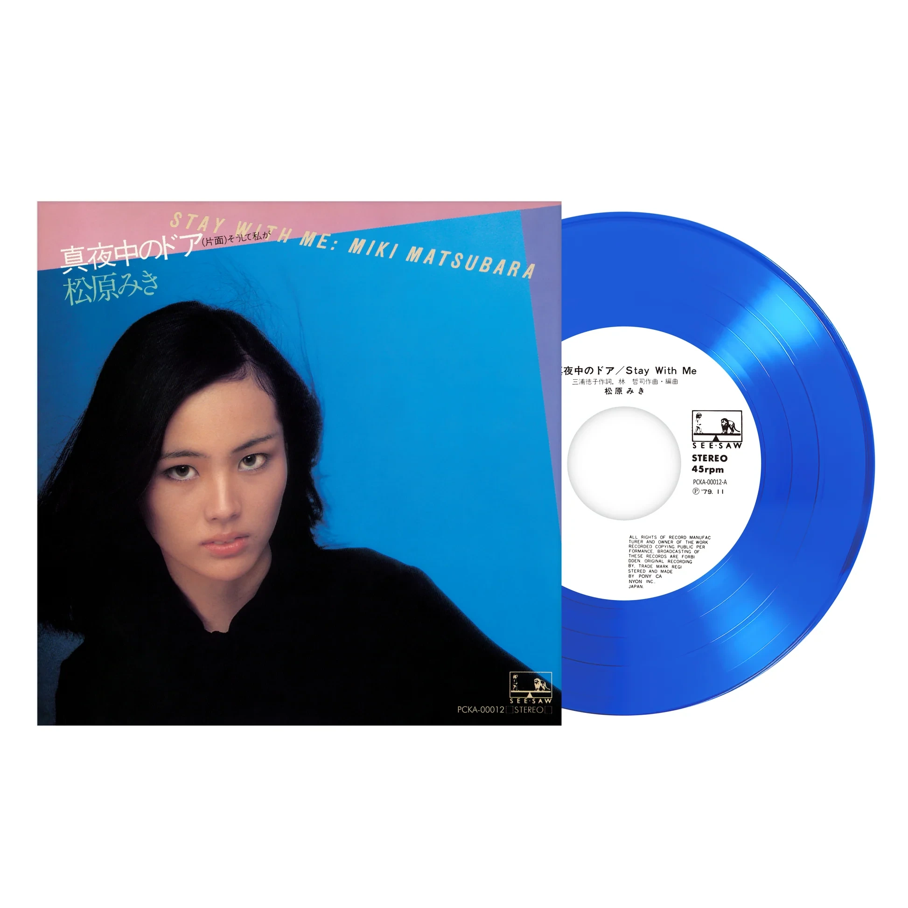
Stay With Me
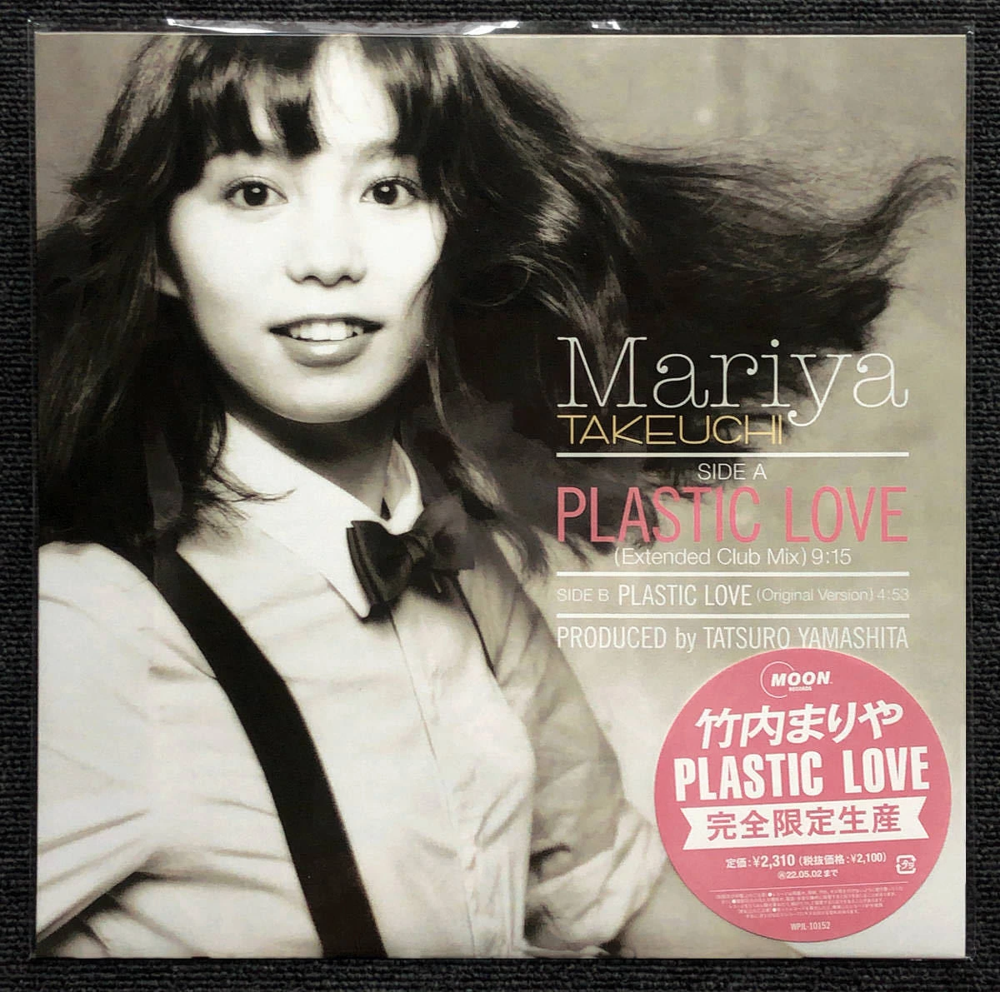
Plastic Love
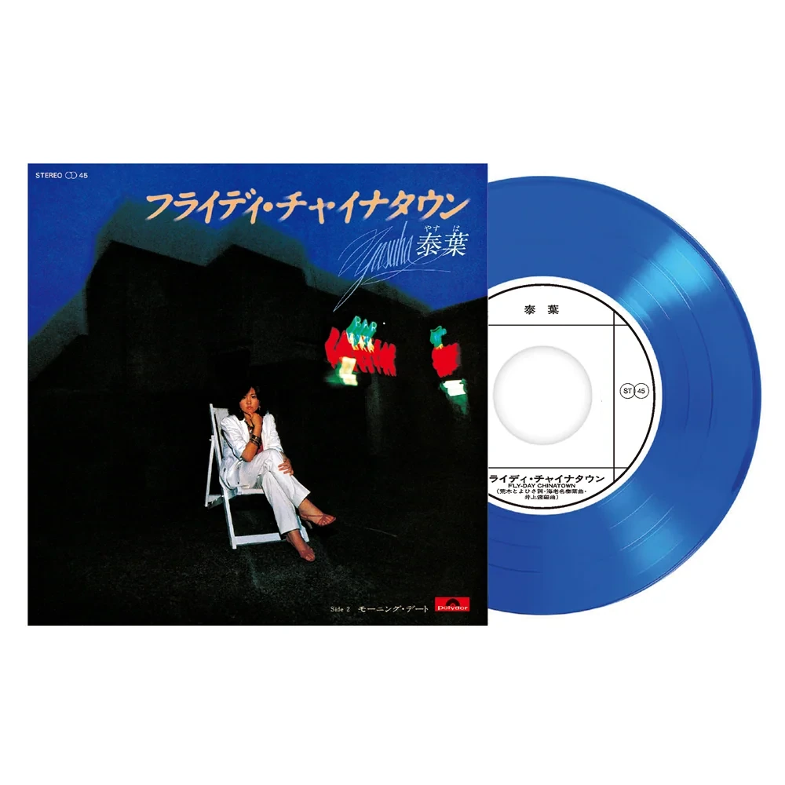
Fly-Day Chinatown

Death Stranding: Songs from the Video Game
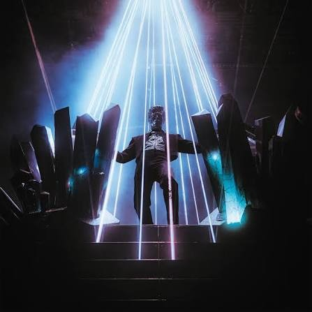
Opr
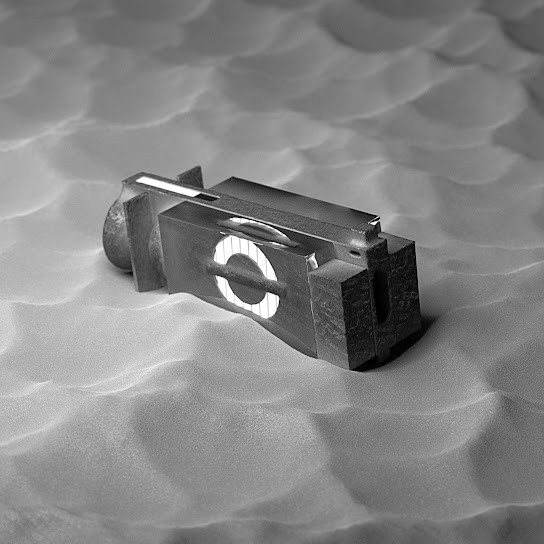
Rarities
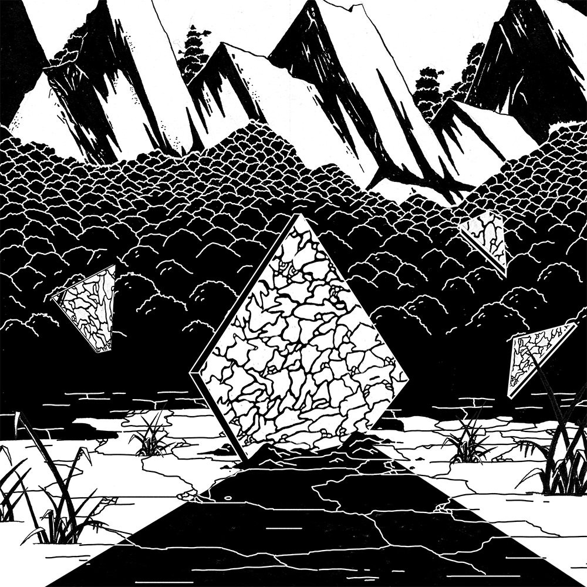
Vessel
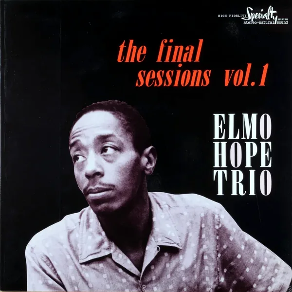
The Final Sessions Vol. 1
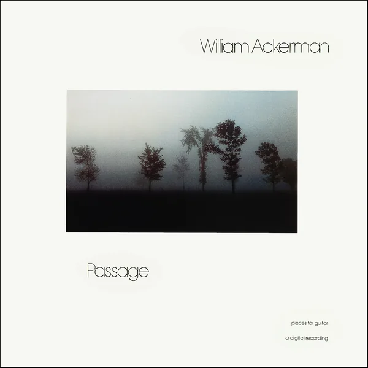
Passage
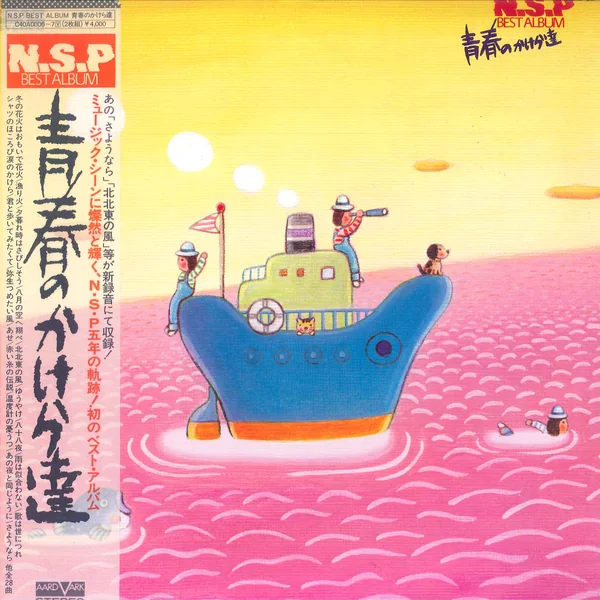
BEST ALBUM 青春のかけら達
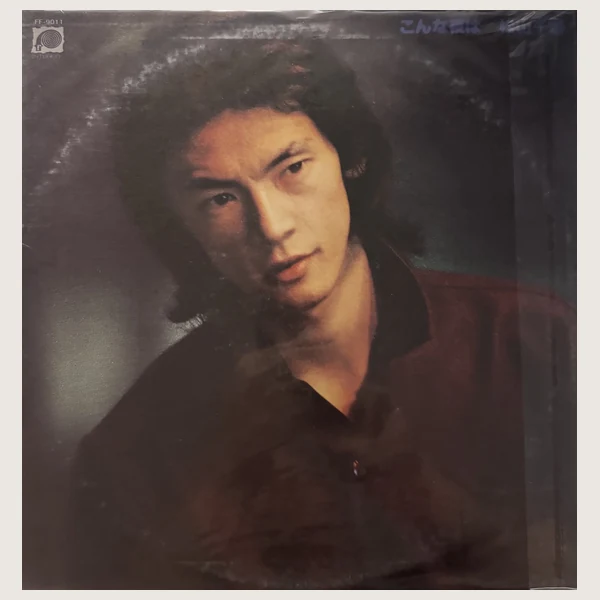
こんにちは
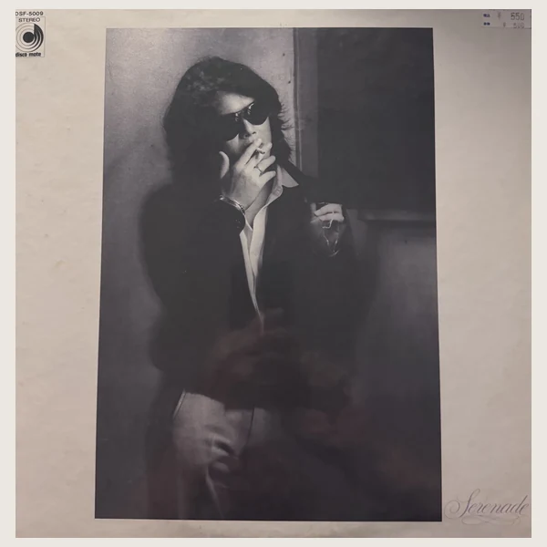
Serenade
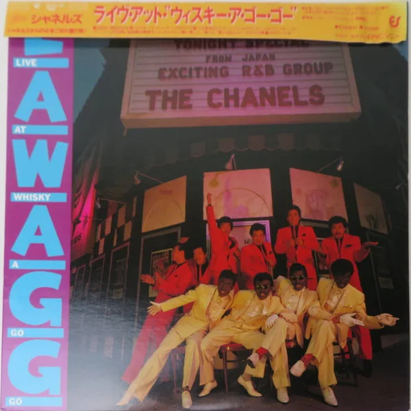
Live at Whisky A Go Go
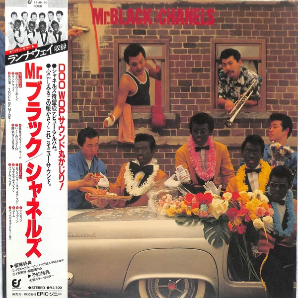
Mr. Black Chanels
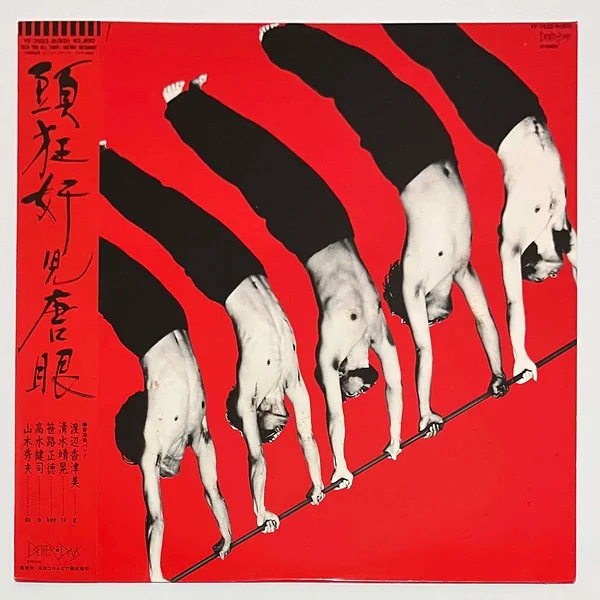
Talk You All Tight
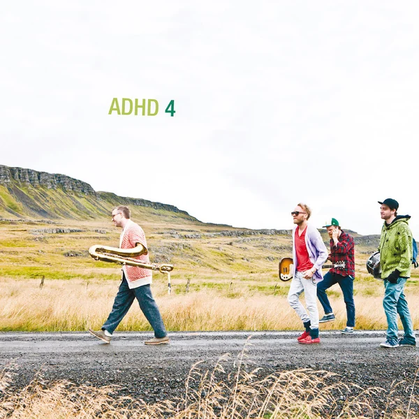
ADHD 4
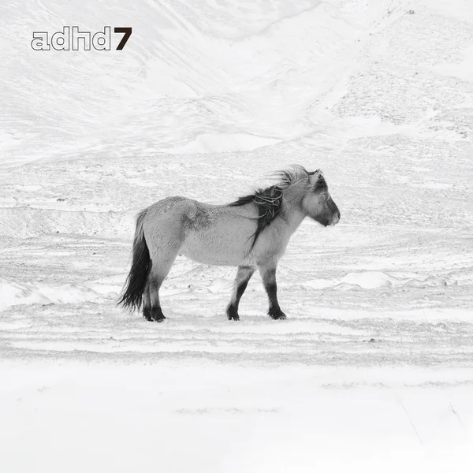
ADHD 7
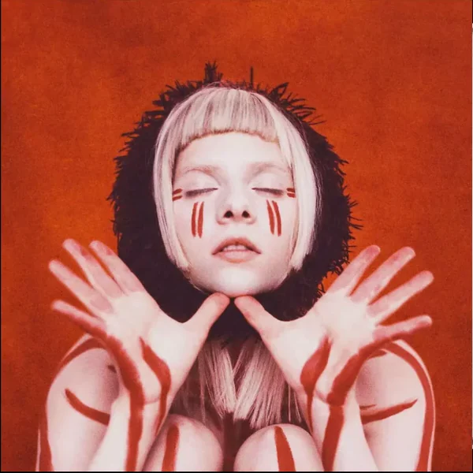
A Different Kind of Human (Step 2)
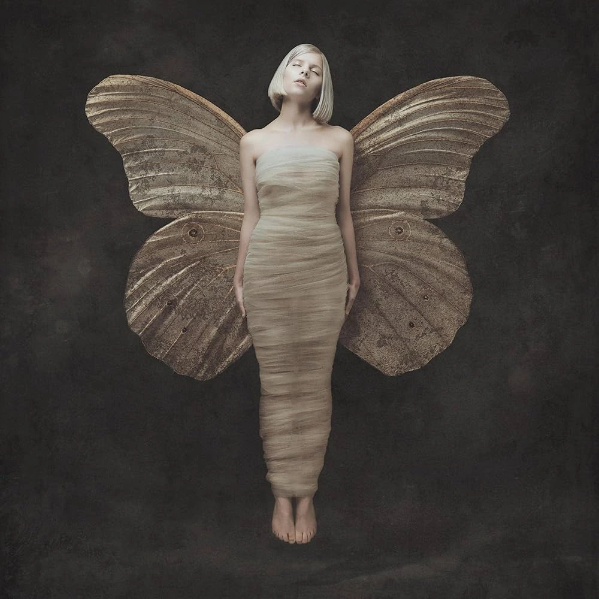
All My Demons Greeting Me as a Friend
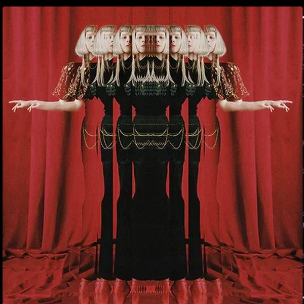
The Gods We Can Touch